Seagrant: ME-NH inshore trawl survey
Home
ME-NH Trawl
NMDS
Top 50 species biomass
Top 50 species abundance
Functional group biomass
Functional group abundance
Anosim/ Adonis
Fishery Landings
Trawl Biodiversity Metrics
Maine-New Hampshire Inshore Trawl
Trawl plots
Top 5 species
Functional Groups
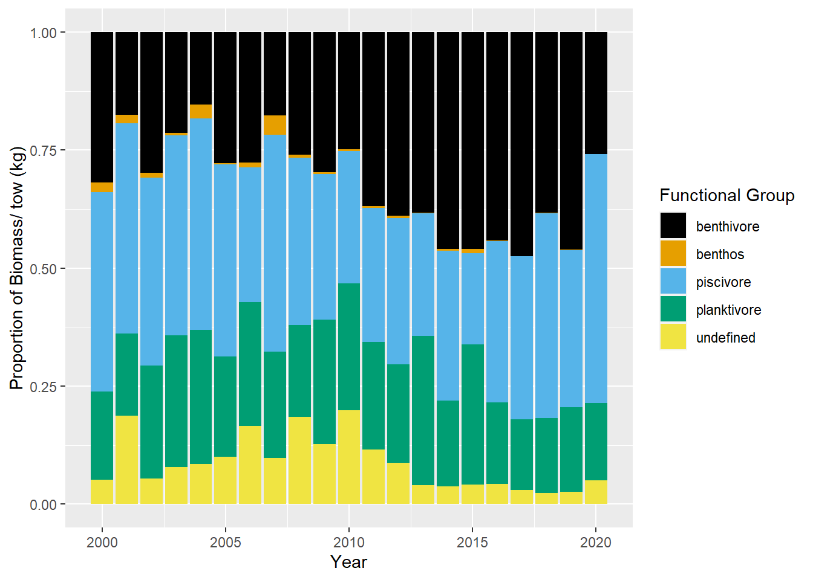
Benthivore
Benthos
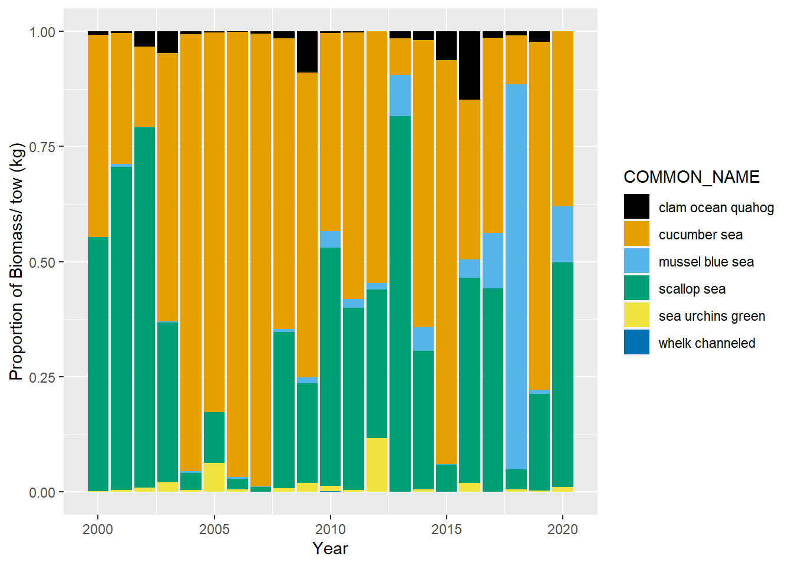
Piscivore
Planktivore
Undefined
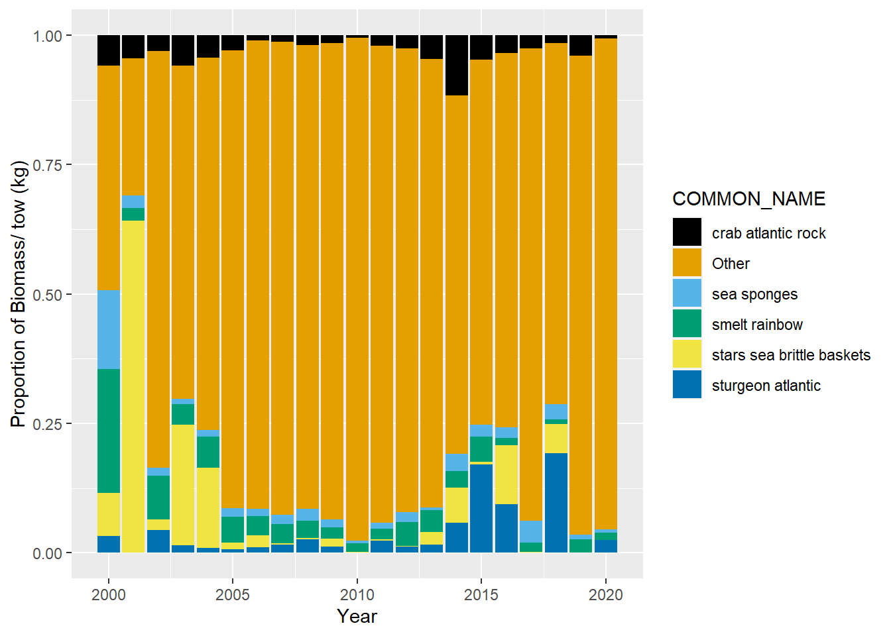
No shrimp


 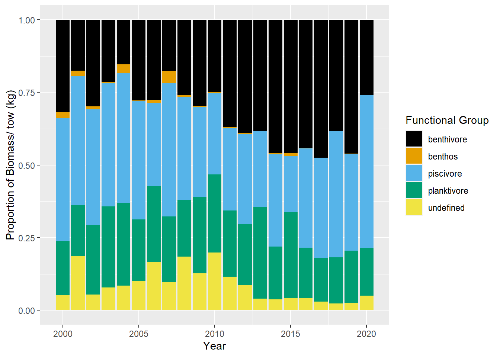
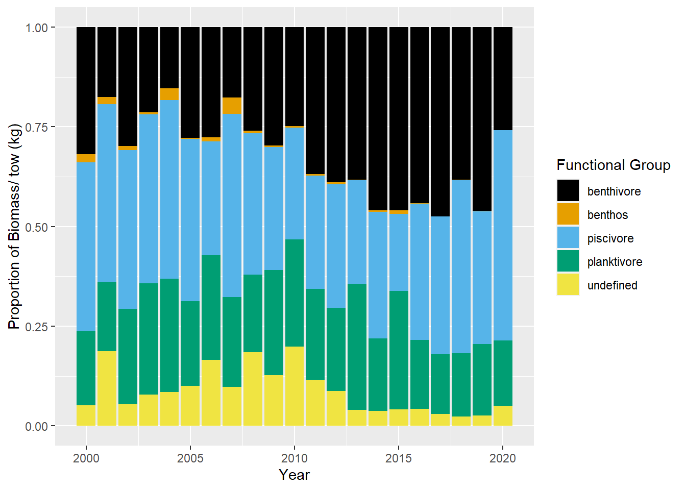


 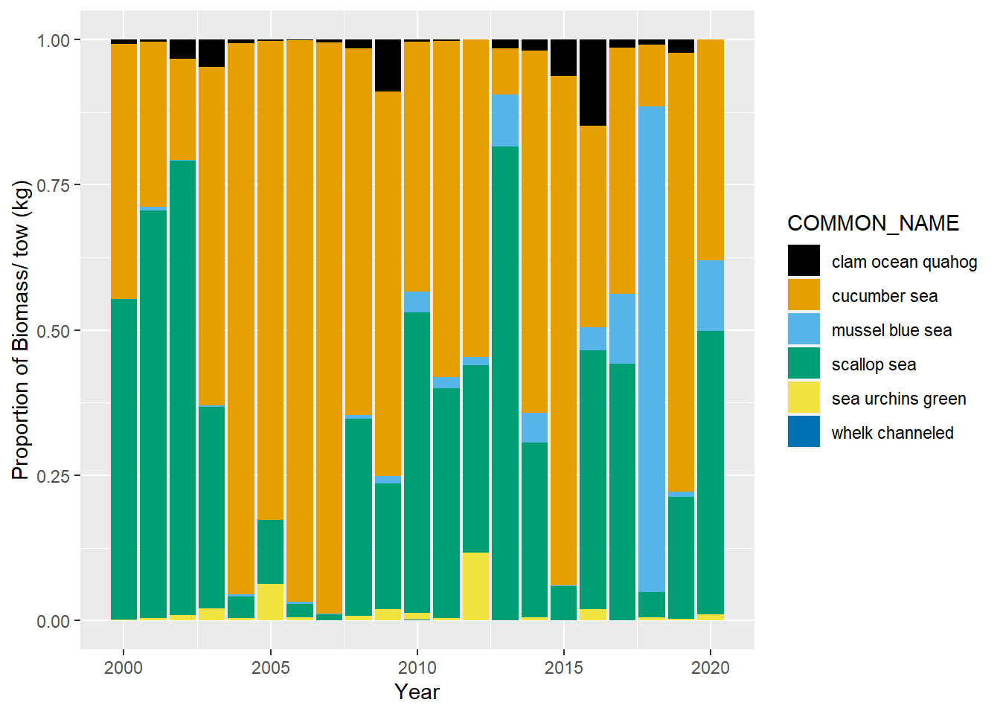
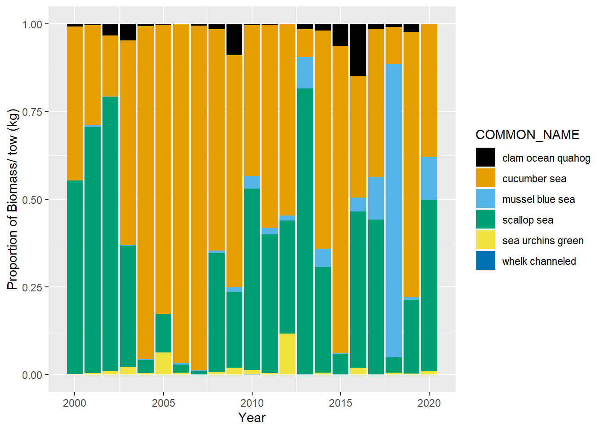


 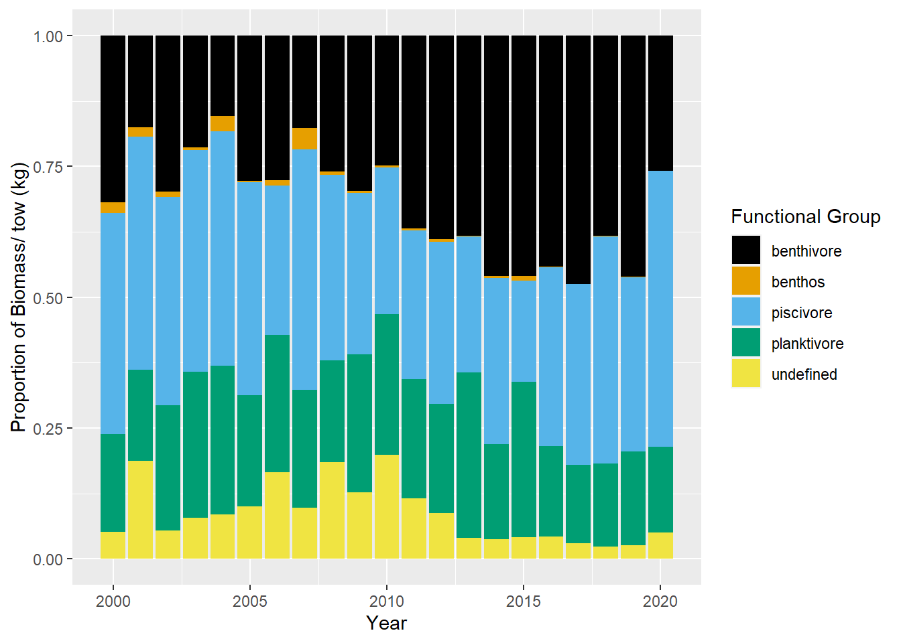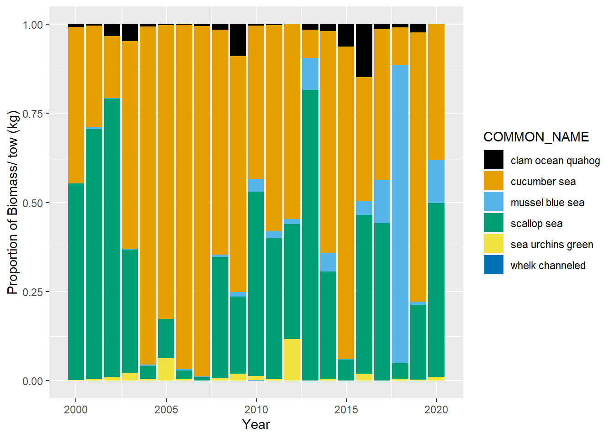
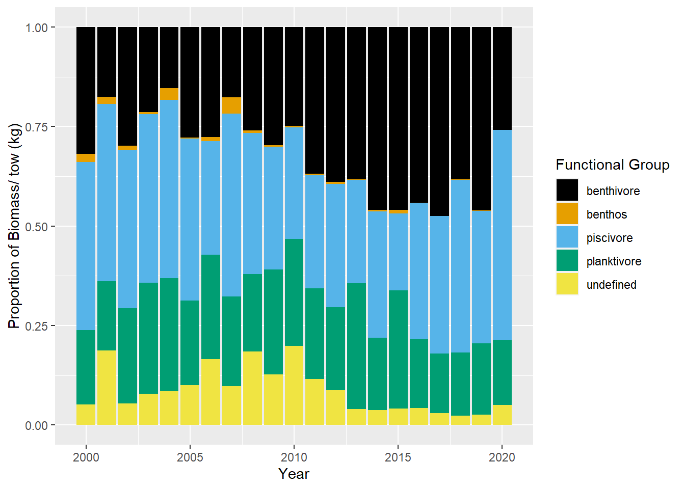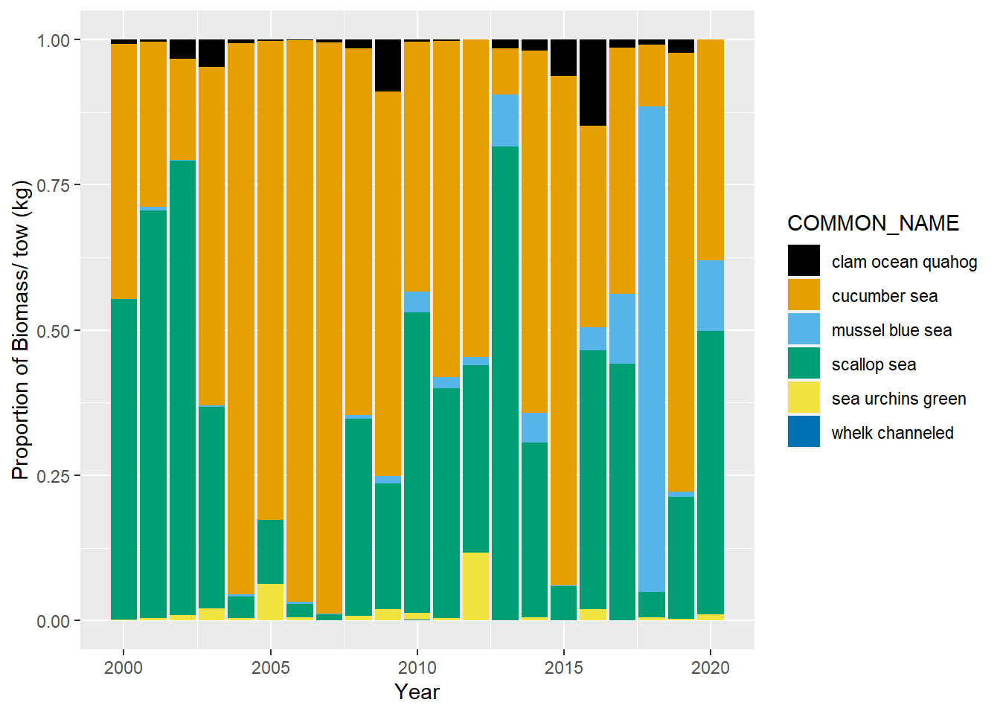